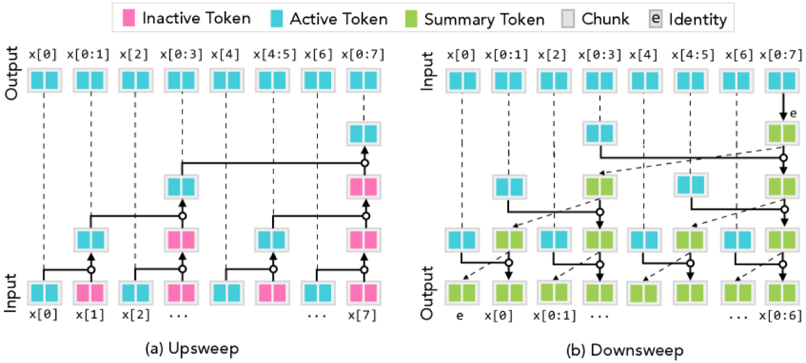

Why it matters왜 중요한가
The zoo of "efficient Transformers" isn't a zoo — it's one animal seen from different angles.
난립하는 '효율적 Transformer'들은 동물원이 아니라, 한 동물을 여러 각도에서 본 것이다.
Transformers train in parallel but pay O(N²) compute and O(N) memory at inference. SSMs and linear-attention variants (Mamba, GLA, RetNet, mLSTM, DeltaNet) fix this with linear-time training and constant-memory recurrence — but each was derived from a different starting point, so it was never clear what exactly makes a model both parallelizable and cheaply recurrent. This work answers that with an algorithmic characterization: a model has SPD precisely when its state can be built by the classic parallel prefix scan. The twist is that the scan still works even when the combining operator is not associative — Blelloch's tree just fixes a parenthesization — which opens the door to dropping a full attention block inside the aggregator without losing efficiency.
Transformer는 병렬 학습이 되지만 추론에서 O(N²) 연산·O(N) 메모리를 치른다. SSM과 선형 어텐션 계열(Mamba·GLA·RetNet·mLSTM·DeltaNet)은 선형 학습·상수 메모리 순환으로 이를 해결하지만, 저마다 다른 출발점에서 유도돼 정확히 무엇이 '병렬+값싼 순환'을 가능케 하는지는 불명확했다. 이 논문은 알고리즘적 특성화로 답한다: 모델이 SPD를 가지는 것은, 그 상태를 고전적 병렬 prefix scan으로 만들 수 있을 때뿐이다. 핵심 반전은, 결합 연산자가 결합법칙을 안 만족해도 scan이 동작한다는 점 — Blelloch 트리가 괄호 묶음을 하나로 고정해 주기 때문이다. 덕분에 효율을 잃지 않고 aggregator 안에 어텐션 블록 전체를 넣을 수 있다.

By the numbers핵심 숫자
(parallel, O(log N) depth)PSM 학습 work
(병렬, O(log N) depth)
(SPD-(N, log N))PSM 추론 메모리
(SPD-(N, log N))
per token at inference토큰당 분할상환
추론 연산량
WikiText-103 (vs GPT-2 22.28)Transformer-PSM PPL
WikiText-103 (GPT-2 22.28)
train ≤18 → test 180 tokensS5 길이 일반화
학습 ≤18 → 테스트 180 토큰
to 40k tok (GPT-2 → 0.04s)PSM 토큰당 지연, 40k까지
거의 평탄 (GPT-2 → 0.04s)
Results — recovers attention quality at sub-quadratic cost결과 — 어텐션 품질을 sub-quadratic 비용으로 회복
| Task / metric과제 / 지표 | Transformer-PSM | GPT-2 | Mamba |
|---|---|---|---|
| WikiText-103 PPL (chunk 256) | 22.45 | 22.28 | — |
| MQAR accuracy (chunk 64)MQAR 정확도 (청크 64) | ≈100% | ≈100% | struggles고전 |
| S5 state-tracking, len 180 (train ≤18)S5 상태추적, 길이 180 (학습 ≤18) | low error낮은 오류 | fails실패 | fails실패 |
| Per-token latency @40k tokens토큰당 지연 @40k | ≈0.008s | ≈0.04s | ≈0.006s |
In one diagram한 장의 그림
The core idea: relax associativity핵심 아이디어: 결합법칙을 풀어라
One affine template
Existing SPD models all fit s_t = E_t ▶ s_{t-1} + f_t with the associative operator (E₂,f₂)⊕(E₁,f₁) = (E₂∘E₁, f₂ + E₂▶f₁). Because it's associative, prefix scan gives SPD-(N, 1): linear training, constant-memory recurrence. Linear Attention, DeltaNet, RetNet, mLSTM, S4/S6, Mamba and GLA are all special cases.
기존 SPD 모델은 모두 s_t = E_t ▶ s_{t-1} + f_t 꼴에, 결합적 연산자 (E₂,f₂)⊕(E₁,f₁) = (E₂∘E₁, f₂ + E₂▶f₁)를 쓴다. 결합적이라 prefix scan이 SPD-(N, 1)을 준다: 선형 학습·상수 메모리 순환. Linear Attention·DeltaNet·RetNet·mLSTM·S4/S6·Mamba·GLA가 모두 특수 케이스.
Non-associative Agg = PSM
Drop the associativity requirement: let Agg θ be any binary operator — even a softmax-attention block. Blelloch's tree imposes a single fixed parenthesization, so training stays O(N)/O(log N) depth and online inference stays O(log N) memory, O(1) amortized compute. This is the new class: SPD-(N, log N).
결합법칙 요구를 버린다: Agg θ를 임의의 이항연산으로 — softmax 어텐션 블록까지. Blelloch 트리가 괄호 묶음을 하나로 고정하므로 학습은 O(N)/O(log N) depth, 온라인 추론은 O(log N) 메모리·O(1) 분할상환 연산을 유지. 이것이 새 부류 SPD-(N, log N).
How it works어떻게 작동하나
- Encode chunks청크 인코딩Split the sequence into chunks of c tokens; Enc maps each chunk to a state x_i ∈ M (in Transformer-PSM, just an embedding layer).시퀀스를 c토큰 청크로 나누고, Enc가 각 청크를 상태 x_i ∈ M으로 매핑(Transformer-PSM에선 단순 임베딩 층).
- Scan with a (non-assoc) aggregator(비결합) aggregator로 scanRun the static Blelloch upsweep+downsweep over chunk states using Agg θ — a bidirectional GPT-style block that fuses two chunk states — to produce every prefix state in parallel.청크 상태들에 Agg θ(두 청크 상태를 융합하는 양방향 GPT 블록)로 정적 Blelloch upsweep+downsweep을 돌려 모든 prefix 상태를 병렬 생성.
- Predict per token토큰별 예측Inf φ (a causal GPT block) takes the prefix state s_{t-1} plus the current chunk and emits per-token logits — local attention over the chunk, global context summarized in the prefix.Inf φ(인과적 GPT 블록)가 prefix 상태 s_{t-1}와 현재 청크를 받아 토큰별 로짓 출력 — 청크 내 지역 어텐션 + prefix에 요약된 전역 맥락.
- Infer with an online counter scan온라인 카운터 scan으로 추론At test time process tokens left-to-right, keeping only the ⌈log₂(t+1)⌉ mini-tree roots and merging them like a binary counter — reproducing the training parenthesization at O(log N) memory.추론 시 토큰을 좌→우로 처리하며 ⌈log₂(t+1)⌉개 미니트리 루트만 유지·이진카운터처럼 병합 — 학습 시 괄호 묶음을 O(log N) 메모리로 재현.
What to take away그래서, 가져갈 것
A single primitive explains the field. "Parallelizable training + cheap recurrence" reduces to "computable by prefix scan" — a clean, testable definition (SPD) rather than a list of architectures.
하나의 원시연산이 분야를 설명한다. "병렬 학습 + 값싼 순환"은 "prefix scan으로 계산 가능"으로 환원된다 — 아키텍처 나열이 아닌, 깔끔하고 검증 가능한 정의(SPD).
Attention can be efficient — inside a scan. Relaxing associativity lets a softmax block be the aggregator, recovering associative recall (MQAR) and state tracking (S5) that linear SSMs lose, at O(log N) memory.
어텐션도 효율적일 수 있다 — scan 안이라면. 결합법칙을 풀면 softmax 블록이 aggregator가 되어, 선형 SSM이 놓치는 연상회상(MQAR)·상태추적(S5)을 O(log N) 메모리로 회복.
Length generalization for free-ish. Transformer-PSM trained on ≤18-token S5 stays accurate at 180 tokens — the chunked prefix structure extrapolates where vanilla GPT-2 and Mamba both fail.
길이 일반화가 거의 공짜. ≤18 토큰 S5로 학습한 Transformer-PSM이 180 토큰에서도 정확 — 청크 prefix 구조가 일반화, 반면 GPT-2·Mamba는 둘 다 실패.